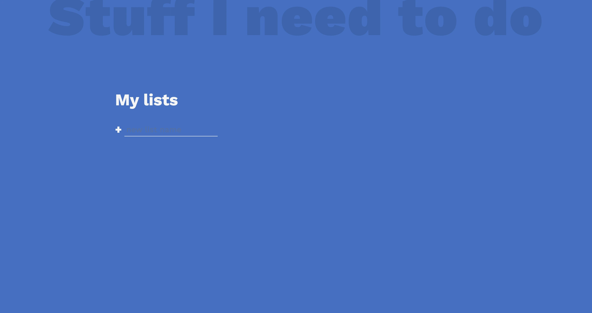

vanilla js todo
To-do List project is an application specially built to keep track of errands or tasks that need to be done. This application is like a task keeper where the user would be able to enter the tasks that they need to do. Once they are done with their tasks they can also remove them from the list.
The four major tasks that can be performed in a TODO list are to add tasks, update tasks, read tasks and delete tasks. Simple CRUD operations.
The project was written using mbrowser-sider side JavaScript. I utilized all of its capabilities like events, loops, functions, saving to local storage, and much more.